PRACTICA 3.1.- INSTALACIÓN DE TOMCAT Y MAVEN PARA DESPLIEGUE DE APLICACIÓN JAVA
1. INTRODUCCIÓN
Para esta práctica necesitaremos una máquina virtual debian a poder ser con entorno gráfico en mi caso usaré una máquina Debian 12.
Una vez tengamos esta instalada y corriendo nos dispondremos a instalar tomcat que usaremos la versión 10 de tomcat.
2. INSTALACIÓN
Para la instalación de tomcat necesitaremos herramientas del sistema de los repositorios Debian y para esto actualizaremos los paquetes:
- Primero necesitaremos actualizar el sistema
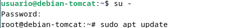
- Despues instalar los paquetes que vamos a necesitar
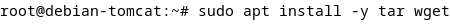
Continuamos con la instalación de tomcat con el siguiente comando:
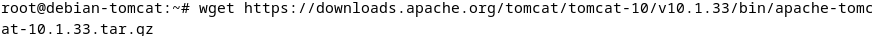
También podemos instalar esto mismo desde la página de tomcat instalación tomcat.
2.1 Creacion del servicio tomcat
Para que podamos usar tomcat como un servicio deberemos comenzar con la creación de usuario la cual usará este.
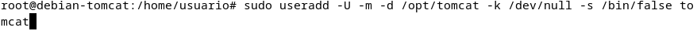
Una vez que hemos creado este usuario debemos descomprimir lo que hemos instalado previamente en el directorio que le hemos asignado a tomcat en nuestro caso /opt/tomcat.
Cuando tenemos el paso anterior debemos darle a esta carpeta los permisos al usuarios que hemos creado para tomcat con la siguiente línea.
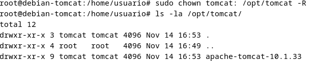
Para facilitar la instalación y mantenimiento podemos cambiar el nombre de estos paquetes con el siguiente comando mv </direccion/nombre-antiguio> </direccion/nombre-nuevo>.
Creamos el archivo de unidad de Systemd:
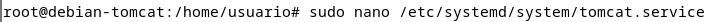
Y en este mismo archivo escribiremos los siguiente:
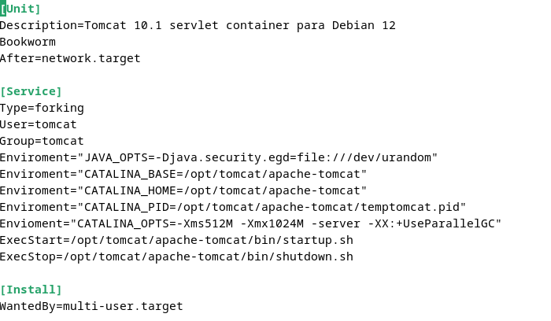
Si lo hemos hecho todo bien iniciaremos el servicio sudo systemctl start tomcat10
Si nos vamos al navegador y buscamos lo siguiente http://localhost:8080 nos debería aparecer una página como esta
3. FIREWALL
Si tenemos un firewall UFW en el sistema y queremos acceder desde la red tendremos que añadir una regla al puerto 8080/TCP
sudo ufw allow 8080/tcp
4. Configuración del sistema de administración de tomcat
Para esto comenzamos introduciendo el siguiente comando
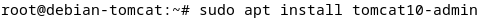
Accedemos al archivo /opt/tomcat/apache-tomcat/conf/tomcat-users.xml y añadimos las siguienes líneas
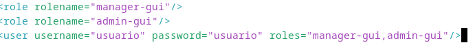
Para esta práctica usaremos el usuario "usuario" y de contraseña "usuario"
Ahora buscaremos http://localhost:8080/admin y si lo hemos hecho bien nos pedirá que nos autenticamos
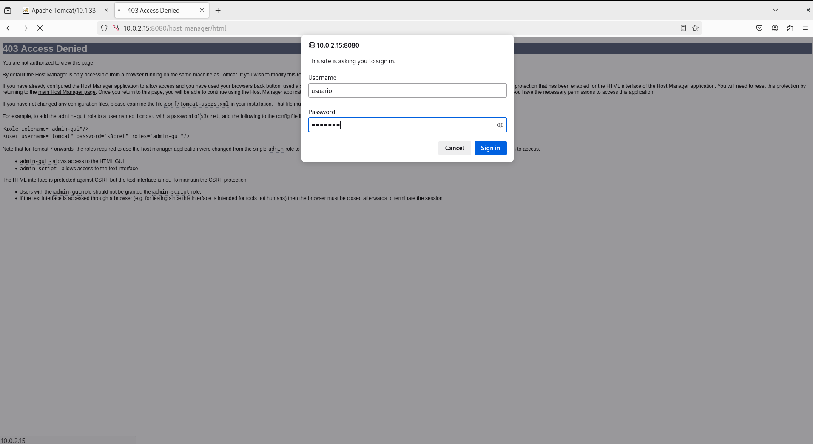
Y veremos la página de admin
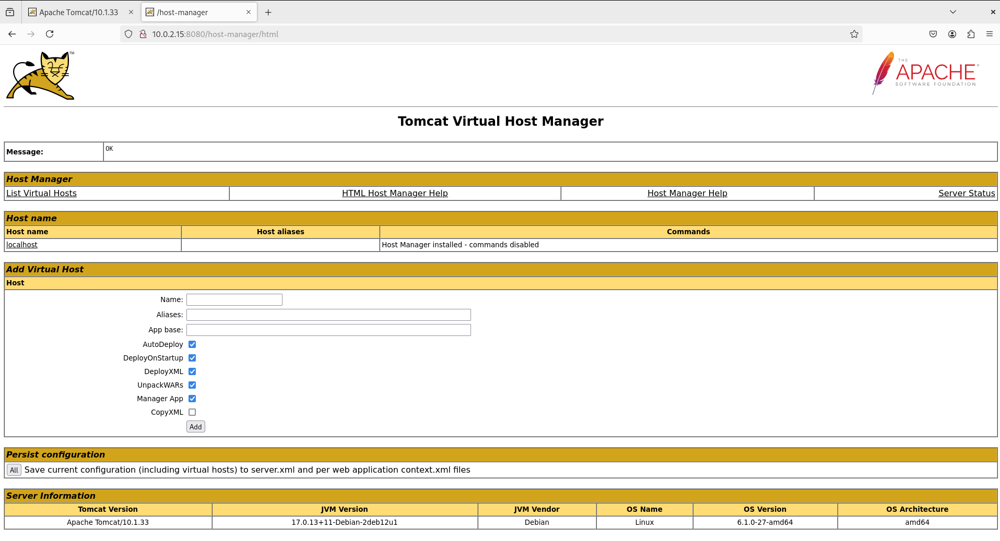
Por último desplegaremos una aplicación .war desde la página http://localhost:8080/manager la desplegaremos desde aquí
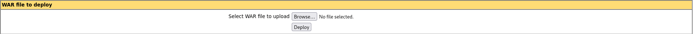
Aquí eligiremos el archivo .war y una vez despleado podremos acceder como un archivo normal
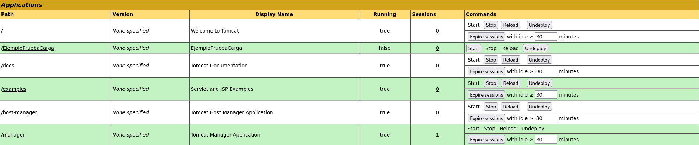
5. Despliege con MAVEN
-
Para hacer un despliegue con Maven primero actualizaremos los repositorios con
sudo apt updatee intalaremso wgetsudo apt install wget -y -
Instalamos Apache Maven
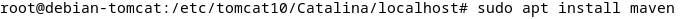
Para poder usar maven con tomcat tenemos que asegurarnos que añadimos todos los usuarios necesarios para que maven pueda hacer este despliege esto significa que maven tenga el permiso de manager-script; para esto añadimos las siguientes líneas.
<role rolename="admin"/>
<role rolename="admin-gui"/>
<role rolename="manager"/>
<role rolename="manager-gui"/>
<role rolename="manager-script"/>
<user username="admin" password="admin" roles="admin,admin-gui,manager,manager-gui"/>
<user username="manager" password="manager" roles="manager-script"/>
Una vez configurado el archivo setting.xml de tomcat debemos configurar el archivo /etc/maven/settings.xml
donde añadiremos las siguiente líneas
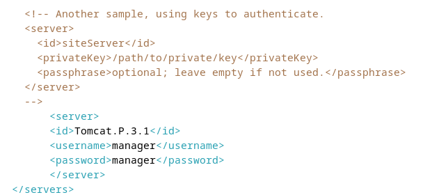
6. despliegue
Ahora para probar que hemos configurado todo bien, vamos a probar a desplegar una aplicación Java de prueba, para ver si podemos desplegarla sobre la arquitectura, lo haremos con el siguiente comando:
P